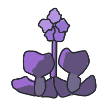

Project Miralta
A cozy survival game where you tend a rooftop garden while the city runs out of water.
Radio Miralta 98.3Day 1 · 6:40 a.m.
Radio Miralta, ninety-eight point three. It's six forty, and the sky, like city hall, promises a lot and commits to nothing.
Project Miralta is a hand-drawn 2D game. You are stuck on the rooftop of a collapsing megacity and must collect water, generate power, grow plants and trade with the city's districts. Nothing explains the problem to you: you learn it when contaminated water makes your crops sick.
The plants are the mechanism; the real subject is keeping a small ecosystem alive when the resource that sustains it is disappearing.
At a glance
- 2full in-game days
- 4 mindemo video
- 5systems on the power panel
- 1key press per step
Try the Day 2 blackout
The power is out. Sergio, the neighbor from 4B, hooks his batteries up to yours: you decide what stays on.
Five systems ask for 26 Sparks, and there are only 14. You have to choose.
- Refrigerator7
- Purifier6
- Pump3
- UV6
- Computer4

Behind the game
Concept
A cozy survival and arcade botanical management game with a hand-drawn, comic-book look. I designed the concept, the systems and the scripted demo shown in the video, built on a custom scene engine with Phaser. The thread of the demo fits in one sentence: the player uses contaminated water out of necessity, a plant mutates, and that mutation changes a neighborhood.
What the demo shows
- Water and its quality Day 1: state water delivery, then acid rain leaves the tank contaminated.
- Crops Day 1: watering and harvesting bougainvillea and pitaya.
- A choice with consequences Day 1 afternoon: cover the plants or open the gutter.
- Economy Day 1 night: a parody store on the computer and bartering in the Lower Districts.
- Power and priorities Day 2: a blackout and a load panel with 5 systems on a limited budget.
- Mutation Day 2: the water lily mutates and filters the water.
- A changing city Day 2 night: a night map with smog, lit windows and a green patch in the Lower Districts.
- World and humor Radio Miralta, the Dunk Wall forum, Air Off parcel service and Sergio the neighbor.
Technical Development
Built with Phaser, using Vite as the development server. A director runs a system of beats that reads a script and executes actions such as changing state, switching the time of day, showing dialogue, zooming into a plant or opening a page. A single list of beats serves both a short and a long version of the demo.
The game state is real, not pasted-on animation: water, power, mood and credits actually change; the script only decides who performs the action. The store, the parcel service and the forum are HTML pages mounted over the canvas, opened by a scripted cursor.
The demo used to get stuck on double and triple clicks. I wrote automated Playwright runs to measure how many key presses each beat needed, found three causes and brought it down to one press per step.
Art and Presentation
2D hand-drawn art in a comic and graphic novel style, with Patrick Hand as the typeface. The night map uses Phaser tweens and particles for smog, windows, smoke and the green patch; the forum photo is made with CSS blur, grain and vignette. A reduced-motion mode shows everything at once.
Project Status
Version preview.0.0.1, prepared as part of a research and presentation project for the XXIV Congreso Nacional de Divulgación de la Ciencia y la Técnica (“Rompamos Paradigmas”), held in Morelia, Michoacán, Mexico, from October 27 to 30, 2026, where I presented it. The video shows a scripted demo: the presenter advances with a single key and the engine performs the actions. Project Miralta is a codename; the final name is still to be decided.